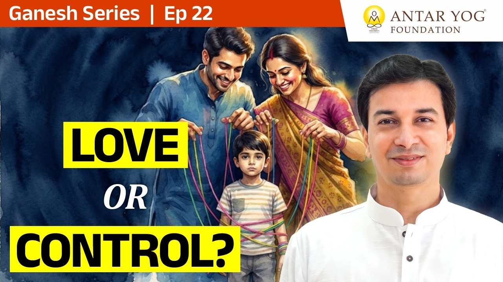

हम में से अधिकतर लोग प्रेम करते हैं, पर भीतर ही भीतर हिसाब भी रखते हैं। "मैंने इतना किया, बदले में क्या मिला?" जिस क्षण यह हिसाब शुरू होता है, प्रेम धीरे-धीरे नियंत्रण और अपेक्षा में बदलने लगता है।
इस छोटे से प्रवचन में आचार्य जी एक माँ के उदाहरण से समझाते हैं कि बिना हिसाब का प्रेम क्या है, और क्यों वही सबसे ऊँची आध्यात्मिक स्थिति है।
कर्म करो, फल का हठ छोड़ो
प्रवचन की शुरुआत एक सीधी सी बात से होती है: कर्म करो, फल का हठ छोड़ दो। और साथ में हमारी परंपरा का वह मूल वाक्य:
मातृदेवो भव। पितृदेवो भव। आचार्यदेवो भव।
(तैत्तिरीय उपनिषद्, शिक्षावल्ली १.११.२)
अर्थात् माता को देवता मानो, पिता को देवता मानो, आचार्य को देवता मानो।
माँ को देवता क्यों कहा गया? क्योंकि वह फल का त्याग (बिना परिणाम की इच्छा के कर्म) सहज रूप से जीती है। आचार्य जी पूछते हैं कि माँ बेटे के लिए जो कुछ करती है, उसका वह कितना बिल लगाती है।
एक बेटे का बिल
एक प्रसिद्ध कथा है। एक लड़का माँ को चिट्ठी लिखता है और हर काम की कीमत लगाता है। बाज़ार से सामान लाया, पच्चीस रुपये। यह काम किया, पच्चीस रुपये। वह काम किया, पचास रुपये। रोज़ कपड़े सुखाए, पच्चीस रुपये।
माँ उत्तर में अपना बिल भेजती है। तुम्हें छोटे से बड़ा किया: शून्य। स्तनपान कराया: शून्य। बीमार थे तो अस्पताल ले गई: शून्य। जब दोस्त तुम्हें डाँटते, मारते थे, तब बचाने आई: शून्य। टीके लगवाए: शून्य।
सोचिए, आपके रिश्तों में आप कौन सा बिल लिखते हैं, बेटे वाला या माँ वाला?
माँ फल क्यों नहीं माँगती?
माँ ने हर चीज़ की कीमत शून्य क्यों लगाई? क्योंकि वह फल चाहती ही नहीं। और वह फल इसलिए नहीं चाहती क्योंकि वह अनुभव करती है कि संतान उससे अलग नहीं है। वह उसी का अंग है, उसी का अंश है।
जन्म के समय माँ को कुछ नहीं पता होता। बच्चा काला है या गोरा, सुंदर है या नहीं, कोई शारीरिक कमी है या नहीं। यह भी नहीं कि आगे चलकर यही उसका शत्रु बनेगा या नहीं। फिर भी प्रेम तुरंत होता है, क्योंकि "यह मेरा अंग है।"
उसी क्षण उसमें मातृभाव (माँ का भाव) जागता है और हृदय चक्र (Heart Chakra, प्रेम और करुणा का केंद्र) जागृत हो जाता है। एक दिन पहले तक वही स्त्री शायद निचले चक्रों की चेतना में जी रही थी। आचार्य जी बताते हैं कि जन्म के समय माँ को यह भी नहीं पता कि आगे चलकर यही बच्चा उसका शत्रु होगा या नहीं, फिर भी उसे तुरंत प्रेम हो जाता है, क्योंकि वह उसका अंग है।
कॉलेज की वह लड़की जो बदल गई
आचार्य जी अपने कॉलेज के दिनों की एक घटना बताते हैं। उनके साथ एक बेफ़िक्र, लड़कों जैसी रहने वाली लड़की थी, जो कहती थी कि छोटे बच्चे उसे पसंद नहीं, सामने आए तो दो थप्पड़ लगा देगी।
जब पूछा गया कि अपना बच्चा होगा तब क्या करोगी, तो बोली कि वह अपनी माँ की तरह सहन नहीं करेगी, बात न मानी तो थप्पड़ लगाएगी।
फिर उसका विवाह हुआ, संतान हुई, और दूसरे ही दिन वह पूरी तरह बदल गई। पूरा दृश्य ही अलग था। क्यों? क्योंकि प्रकृति स्वभाव से ही, कम से कम अपनी संतान के लिए, उसी क्षण मातृभाव और हृदय चक्र जागृत कर देती है।
जब अपेक्षा आती है
फल मिलता भी है। अच्छे संस्कार दिए तो बेटा बुढ़ापे की लाठी बनेगा, बेटी भी सब कुछ करेगी। पर शास्त्र कहता है कि जिस दिन माँ अपेक्षा करने लगे, उस दिन वह अच्छी माँ नहीं रहती।
यहीं वह बारीक रेखा है जहाँ प्रेम नियंत्रण में बदलने लगता है। सच्ची माँ बस देती रहती है। और आचार्य जी कहते हैं कि यही स्थिति सर्वोच्च है।
क्या आपके प्रेम में कहीं चुपचाप कोई अपेक्षा बैठी है?
एक की माता से जगन्माता तक
ध्यान, ज्ञान, साधना, इन सबका लक्ष्य इसी स्थिति तक पहुँचना है। पर माँ ने कौन सा ज्ञान लिया था? कौन सा ध्यान लगाया था? उसने बस करना शुरू कर दिया।
उसने यह एक बच्चे के लिए किया। अब वही व्यवहार धीरे-धीरे पूरे विश्व के साथ करो। पड़ोसी के साथ, शत्रु के बेटे के साथ भी, हर जगह। आचार्य जी कहते हैं कि जो धीरे-धीरे पूरे विश्व के साथ ऐसा करती है, वह भी जगन्माता हो जाती है।
जगन्माता का अर्थ है सम्पूर्ण जगत की माता। अभी हम केवल अपनों के लिए बिना हिसाब के जीते हैं। साधना उस घेरे को बड़ा करने का नाम है।
मुख्य बातें
- कर्म करो, फल का हठ छोड़ो; यही सर्वोच्च स्थिति है।
- माँ हर सेवा का बिल शून्य लगाती है, क्योंकि वह फल नहीं चाहती।
- संतान को अपना अंग मानने से प्रेम सहज होता है; उसी क्षण मातृभाव और हृदय चक्र जागृत होते हैं।
- जब माँ अपेक्षा करने लगती है, तब वह अच्छी माँ नहीं रहती।
- ध्यान और ज्ञान का लक्ष्य इसी निःस्वार्थ स्थिति तक पहुँचना है।
- एक के प्रति जो भाव है, उसे पूरे विश्व तक फैलाओ, तो जगन्माता बन जाओगे।
